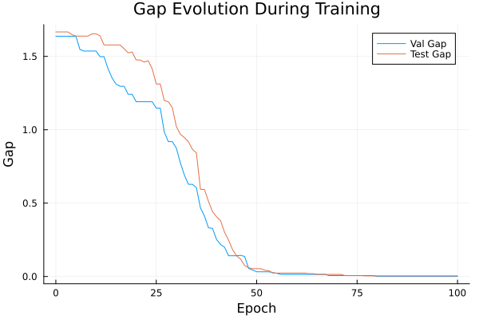
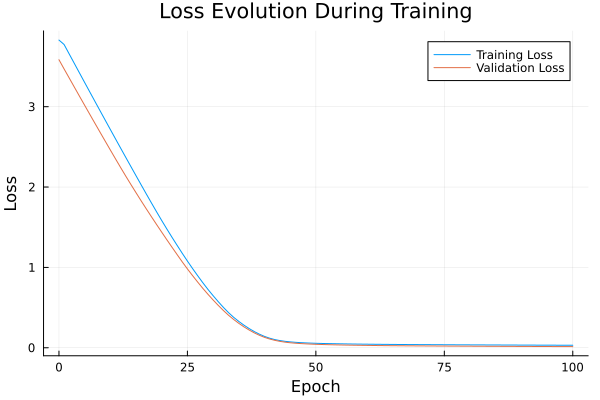

Basic Tutorial: Training with FYL on Argmax Benchmark
This tutorial demonstrates the basic workflow for training a policy using the Perturbed Fenchel-Young Loss algorithm.
Setup
using DecisionFocusedLearningAlgorithms
using DecisionFocusedLearningBenchmarks
using MLUtils: splitobs
using PlotsCreate Benchmark and Data
b = ArgmaxBenchmark()
dataset = generate_dataset(b, 100)
train_data, val_data, test_data = splitobs(dataset; at=(0.3, 0.3, 0.4))(DecisionFocusedLearningBenchmarks.Utils.DataSample{@NamedTuple{}, @NamedTuple{}, Matrix{Float32}, Vector{Float32}, Vector{Float32}}[DataSample(x=Float32[-0.422216 -0.192784 … 0.766925 -0.650121; -1.52915 1.31226 … -0.314295 0.913861; … ; -0.262306 1.45898 … -0.581601 -1.46225; -1.29635 -0.546825 … 0.833662 0.216564], θ=Float32[-2.05371, 1.53643, 3.93185, -0.536749, 3.42142, -0.694313, 0.772553, 0.497622, 2.20996, 1.3981], y=Float32[0.0, 0.0, 1.0, 0.0, 0.0, 0.0, 0.0, 0.0, 0.0, 0.0]), DataSample(x=Float32[-0.368647 0.309651 … -0.723595 -0.595365; -0.826637 -0.572963 … -0.760461 0.742662; … ; -1.73416 -0.189248 … -0.485384 -0.64318; 0.96956 -3.21182 … 0.419125 0.784596], θ=Float32[0.432641, -4.1886, -0.744446, 1.28703, -0.697897, 0.290685, -1.00794, -2.46683, 0.0902463, 2.62071], y=Float32[0.0, 0.0, 0.0, 0.0, 0.0, 0.0, 0.0, 0.0, 0.0, 1.0]), DataSample(x=Float32[1.84697 0.204326 … -0.181532 0.721078; -0.448782 0.38463 … 0.248976 1.20872; … ; -1.04684 -0.19187 … -1.03425 0.595242; -0.313085 1.66988 … -0.84951 -1.11211], θ=Float32[-2.87686, -0.732147, 0.347892, 0.55873, -1.16358, -0.788647, 0.990058, 0.0940867, 2.4886, 0.213103], y=Float32[0.0, 0.0, 0.0, 0.0, 0.0, 0.0, 0.0, 0.0, 1.0, 0.0]), DataSample(x=Float32[-0.765333 -0.578637 … 0.462272 -0.770161; -0.184265 0.794383 … -1.14305 0.982151; … ; 0.0987667 0.218375 … 0.273593 0.174991; -1.34852 0.839855 … -0.337835 -0.370526], θ=Float32[-1.46451, 0.919412, -2.31535, 0.315455, 0.417857, -0.535094, 0.685189, 1.39289, -3.91674, 0.92166], y=Float32[0.0, 0.0, 0.0, 0.0, 0.0, 0.0, 0.0, 1.0, 0.0, 0.0]), DataSample(x=Float32[-1.00467 -1.28123 … -1.29895 -1.28671; -1.01578 0.372683 … -0.909921 -0.464136; … ; 0.855668 0.549268 … -0.175219 -0.270837; 0.795346 0.990249 … 3.36412 0.61364], θ=Float32[-0.309723, 2.42289, -1.29706, 2.31747, 0.819189, 1.34349, -0.261793, 1.74952, 1.92416, 0.858846], y=Float32[0.0, 1.0, 0.0, 0.0, 0.0, 0.0, 0.0, 0.0, 0.0, 0.0]), DataSample(x=Float32[1.26108 0.714157 … -1.14592 -0.281985; -1.49737 -0.47258 … 2.02738 0.630341; … ; -0.644195 0.347477 … 0.481373 -0.875336; 1.13392 0.472384 … 0.747832 0.66668], θ=Float32[-0.915216, -0.600199, 0.177573, 0.578615, 0.143053, -1.63553, -0.804077, 0.269611, 4.22024, 1.0863], y=Float32[0.0, 0.0, 0.0, 0.0, 0.0, 0.0, 0.0, 0.0, 1.0, 0.0]), DataSample(x=Float32[-0.975609 0.947789 … 1.21314 1.88691; -1.63265 0.583897 … -0.770734 -0.236879; … ; 0.452838 -1.05777 … -1.00421 -0.126943; 0.417195 -0.415614 … -1.01708 1.16568], θ=Float32[-1.54159, -0.11581, -0.802246, 1.56477, -1.93868, 1.39391, -0.310181, -2.91687, -2.52153, -0.35217], y=Float32[0.0, 0.0, 0.0, 1.0, 0.0, 0.0, 0.0, 0.0, 0.0, 0.0]), DataSample(x=Float32[-1.20741 0.318559 … 1.03164 -1.98106; -2.11895 -0.602086 … 0.533848 -0.0781086; … ; 1.58437 1.40728 … 0.0568578 1.09927; 0.780299 1.02939 … 2.71283 0.0662267], θ=Float32[-0.896772, -0.705902, -0.026369, 0.596726, -2.54798, 1.55811, -2.31825, 0.858438, 1.5813, 1.51321], y=Float32[0.0, 0.0, 0.0, 0.0, 0.0, 0.0, 0.0, 0.0, 1.0, 0.0]), DataSample(x=Float32[0.187525 -1.38659 … -0.178397 -0.376763; 1.25994 1.71122 … 1.88279 -0.48816; … ; -1.1214 -1.47376 … 0.326516 1.28826; 0.0739181 -0.577032 … -0.455608 -0.326988], θ=Float32[0.158529, 0.737237, -1.20194, -1.42367, 1.78755, -0.69803, 0.4567, -0.00601903, 1.21492, 0.479146], y=Float32[0.0, 0.0, 0.0, 0.0, 1.0, 0.0, 0.0, 0.0, 0.0, 0.0]), DataSample(x=Float32[-2.24013 0.703255 … -0.324728 1.53325; -0.252374 0.14271 … -0.129119 -1.96681; … ; -0.745341 1.49799 … -1.23923 0.0768733; -1.31107 0.150614 … 0.345399 -0.676421], θ=Float32[0.025041, -1.40014, 0.20521, 0.0290903, -0.972641, -1.25168, 0.46135, 0.83194, 0.750523, -1.38581], y=Float32[0.0, 0.0, 0.0, 0.0, 0.0, 0.0, 0.0, 1.0, 0.0, 0.0]) … DataSample(x=Float32[-0.67908 1.54715 … -0.141184 -0.692186; -2.47279 0.0936068 … 0.628415 1.50486; … ; -0.306551 -0.0556998 … 1.87031 -0.279078; 0.791493 2.00384 … 1.2574 1.55326], θ=Float32[-0.74162, 0.696411, 0.764515, -1.2143, 0.566246, 0.864495, -0.540805, 2.54653, 3.05669, -0.0834714], y=Float32[0.0, 0.0, 0.0, 0.0, 0.0, 0.0, 0.0, 0.0, 1.0, 0.0]), DataSample(x=Float32[1.27407 1.78412 … -0.173589 1.15702; 0.0800924 -0.827787 … -1.24005 -0.560588; … ; -0.73017 -2.05275 … -1.03592 -0.612962; -0.623197 1.58153 … -1.09139 -0.399119], θ=Float32[0.314822, -2.03396, -0.832068, 2.54664, -1.29686, -2.49711, 0.798142, -2.36736, 0.247527, -0.40147], y=Float32[0.0, 0.0, 0.0, 1.0, 0.0, 0.0, 0.0, 0.0, 0.0, 0.0]), DataSample(x=Float32[0.203866 -0.627194 … -0.221091 1.53616; -0.0485586 -1.14381 … 0.202641 -2.31656; … ; -0.458138 0.264499 … 0.523093 0.693671; -0.80531 0.600177 … 0.856588 -1.06], θ=Float32[0.132612, 0.153712, -0.768409, -1.93774, -1.7458, -0.601576, -1.2156, -0.381753, 0.770099, -3.27249], y=Float32[0.0, 0.0, 0.0, 0.0, 0.0, 0.0, 0.0, 0.0, 1.0, 0.0]), DataSample(x=Float32[1.30466 -0.249375 … -1.18673 2.05024; 0.0649464 0.573116 … -0.704085 -0.555707; … ; -1.08741 0.0739618 … -0.0159706 -0.499638; -1.58398 0.826082 … -0.616061 0.76457], θ=Float32[-2.22582, 2.04944, 1.19584, 1.4982, 1.91444, 1.90572, 0.325572, 0.0442129, -0.0499958, 0.713831], y=Float32[0.0, 1.0, 0.0, 0.0, 0.0, 0.0, 0.0, 0.0, 0.0, 0.0]), DataSample(x=Float32[1.02359 -0.0352935 … -1.36801 -0.332252; 0.625212 -0.763959 … 1.85917 0.124585; … ; 0.0352475 0.791748 … 0.486145 -1.80795; -0.0899131 -0.063369 … -0.32595 -0.275523], θ=Float32[-1.03472, -1.97966, 1.53502, -0.204991, 0.00835687, -1.97931, -0.534501, -1.25919, 2.30338, 1.31467], y=Float32[0.0, 0.0, 0.0, 0.0, 0.0, 0.0, 0.0, 0.0, 1.0, 0.0]), DataSample(x=Float32[-1.67334 2.24322 … 0.717214 0.108323; 0.17072 -0.565833 … 0.307695 -0.475962; … ; 0.917698 -0.321722 … 2.25686 -0.709582; 0.51744 0.290708 … -0.0598487 1.13185], θ=Float32[1.56707, -1.06013, 0.759804, 0.667736, 1.13807, -1.7124, -1.19455, -1.73448, -0.31168, 0.567244], y=Float32[1.0, 0.0, 0.0, 0.0, 0.0, 0.0, 0.0, 0.0, 0.0, 0.0]), DataSample(x=Float32[-1.80011 -1.19658 … -0.948721 0.100646; -0.330434 0.198553 … 0.538314 -1.45871; … ; 0.0432478 -1.11894 … 1.08381 -0.897387; 0.7429 0.480307 … 0.933252 -0.43044], θ=Float32[0.997592, 1.65626, 0.573229, -1.56129, 0.497371, -2.36283, 0.553036, 0.172138, 1.79542, -0.116364], y=Float32[0.0, 0.0, 0.0, 0.0, 0.0, 0.0, 0.0, 0.0, 1.0, 0.0]), DataSample(x=Float32[0.772732 0.383598 … 0.16295 -0.151944; 0.202582 0.462124 … -1.81586 0.317109; … ; 0.132207 -1.67558 … -0.181859 -0.441655; 1.03474 0.681647 … 1.70244 0.396184], θ=Float32[0.904385, -1.00407, 2.28365, -2.75592, -0.702307, 0.857476, 1.76361, -1.46082, 0.19353, 1.64105], y=Float32[0.0, 0.0, 1.0, 0.0, 0.0, 0.0, 0.0, 0.0, 0.0, 0.0]), DataSample(x=Float32[-0.668687 0.16548 … -0.226938 0.485447; -0.0296939 0.17797 … 0.913295 -0.744482; … ; -0.625554 3.04779 … 0.0676233 -0.517375; 0.141614 -0.967249 … 1.50098 -0.840997], θ=Float32[0.343506, -0.394371, 1.14075, -0.102703, 0.152589, 0.91883, 1.6648, 0.774733, 0.581439, -0.86283], y=Float32[0.0, 0.0, 0.0, 0.0, 0.0, 0.0, 1.0, 0.0, 0.0, 0.0]), DataSample(x=Float32[1.20197 0.559368 … -0.194329 0.305167; 1.38761 -1.35281 … -0.500659 -1.85893; … ; 1.44944 1.18462 … -0.758526 0.408239; 0.839075 1.42496 … -0.890992 1.62475], θ=Float32[-0.981627, -1.82542, -0.642252, -0.362723, 1.03982, 1.63589, 0.438131, -1.60673, -0.520381, 0.193168], y=Float32[0.0, 0.0, 0.0, 0.0, 0.0, 1.0, 0.0, 0.0, 0.0, 0.0])], DecisionFocusedLearningBenchmarks.Utils.DataSample{@NamedTuple{}, @NamedTuple{}, Matrix{Float32}, Vector{Float32}, Vector{Float32}}[DataSample(x=Float32[-0.783524 0.089646 … 0.959304 0.216212; 0.969417 -1.36954 … -0.0851278 0.203818; … ; 0.0978545 1.38962 … -1.18713 0.0728964; 0.516402 0.950613 … -1.07025 0.412176], θ=Float32[-0.127796, -2.48855, -0.414863, -0.276807, 1.5297, 2.18262, 0.298016, -1.36908, -2.1983, 0.792953], y=Float32[0.0, 0.0, 0.0, 0.0, 0.0, 1.0, 0.0, 0.0, 0.0, 0.0]), DataSample(x=Float32[-0.083217 -1.93408 … 0.961543 -0.307143; -0.728747 -1.08732 … 0.901077 1.28935; … ; 1.6155 -1.0527 … 0.32545 0.0759033; 0.664413 -0.58309 … -0.601239 1.06705], θ=Float32[1.7198, 0.63169, 1.39876, -0.649866, -1.57857, -0.0572114, -0.653893, 2.98657, -0.756029, 2.65781], y=Float32[0.0, 0.0, 0.0, 0.0, 0.0, 0.0, 0.0, 1.0, 0.0, 0.0]), DataSample(x=Float32[0.0326474 0.263701 … -0.227664 0.302012; 1.10329 0.145081 … 0.4317 -0.86986; … ; 0.729696 0.19089 … 0.968488 0.115632; 1.50314 -1.595 … -0.762767 -0.016695], θ=Float32[2.28993, -1.31187, -0.483508, 1.04128, -1.47036, -0.516237, 3.89534, 1.30247, 0.677129, -0.983268], y=Float32[0.0, 0.0, 0.0, 0.0, 0.0, 0.0, 1.0, 0.0, 0.0, 0.0]), DataSample(x=Float32[0.361497 0.469533 … -0.556027 0.888743; -0.198821 -1.80377 … 0.629309 -0.471633; … ; 0.14295 0.281485 … 1.45134 -0.818062; -0.0667558 -0.0739533 … 1.24034 0.18298], θ=Float32[0.1105, -0.0452343, -1.51619, 1.45396, -1.30602, -2.99294, 1.06223, 2.37477, 1.95372, 0.391411], y=Float32[0.0, 0.0, 0.0, 0.0, 0.0, 0.0, 0.0, 1.0, 0.0, 0.0]), DataSample(x=Float32[0.914834 0.0321634 … -0.0126195 -0.52649; -0.796782 -1.53584 … -0.484696 -0.107049; … ; -1.0188 -2.09068 … -2.25986 -0.1224; -0.495695 2.09882 … 1.4662 -0.494452], θ=Float32[-0.548388, 2.04702, -1.7372, 1.24031, 1.92824, 2.14631, 3.02475, 1.49958, 0.170897, -0.531138], y=Float32[0.0, 0.0, 0.0, 0.0, 0.0, 0.0, 1.0, 0.0, 0.0, 0.0]), DataSample(x=Float32[-0.331701 0.549762 … -1.71278 0.0754001; 1.27538 -0.0589102 … -0.688007 -0.0102995; … ; -0.212548 0.661376 … -0.325748 0.507616; -0.787135 -1.40834 … 0.469685 0.040237], θ=Float32[-0.574373, -0.884816, 0.883693, -0.329303, -1.5063, 0.751537, 0.392577, -0.0720997, 0.46871, 1.1519], y=Float32[0.0, 0.0, 0.0, 0.0, 0.0, 0.0, 0.0, 0.0, 0.0, 1.0]), DataSample(x=Float32[1.26623 2.61845 … -0.661831 -0.762145; -2.5489 0.747422 … -0.19426 0.963347; … ; -0.415958 0.945754 … -1.57841 -2.35728; 1.43605 -1.82479 … 0.520292 0.18723], θ=Float32[-1.66007, -3.84741, 0.923392, -1.30963, 0.527332, 0.113871, -1.42929, 0.77879, 1.85961, 2.24811], y=Float32[0.0, 0.0, 0.0, 0.0, 0.0, 0.0, 0.0, 0.0, 0.0, 1.0]), DataSample(x=Float32[-0.833448 0.546916 … 1.10844 -0.271636; 0.307813 -0.382307 … 1.14498 -1.94242; … ; -0.252569 -0.411073 … 0.00629183 -1.243; 1.35426 -0.923021 … -1.22039 0.795255], θ=Float32[1.11109, -2.05449, -1.56971, -0.119932, -1.9294, -3.21178, 0.084753, 0.186812, -1.40181, 0.204606], y=Float32[1.0, 0.0, 0.0, 0.0, 0.0, 0.0, 0.0, 0.0, 0.0, 0.0]), DataSample(x=Float32[-0.927926 -1.81161 … 0.818712 0.714245; 2.09856 -1.40183 … -1.42006 0.449519; … ; 0.729827 0.657541 … -0.234548 0.968316; -1.32517 -1.55035 … 0.656502 1.1797], θ=Float32[0.878487, -1.07786, -0.71932, -0.555443, -0.581439, -2.03637, 1.69117, -0.442735, -1.24176, 0.0887768], y=Float32[0.0, 0.0, 0.0, 0.0, 0.0, 0.0, 1.0, 0.0, 0.0, 0.0]), DataSample(x=Float32[-0.10237 -0.985241 … 3.37592 -0.205085; -0.206025 -1.56484 … -1.92311 1.12431; … ; -0.268748 0.607747 … -1.87189 1.33186; 0.325068 -0.397882 … -0.140042 -0.309187], θ=Float32[1.39048, 2.03204, 0.178041, -1.57946, 0.950761, -1.63586, 0.464007, -2.93611, -1.42309, 0.0314911], y=Float32[0.0, 1.0, 0.0, 0.0, 0.0, 0.0, 0.0, 0.0, 0.0, 0.0]) … DataSample(x=Float32[0.696438 0.590504 … 0.936018 -2.01626; -0.393472 -1.26277 … 0.464049 -0.62029; … ; 1.01246 -0.270219 … 0.770168 -1.36615; -0.872079 -0.435793 … 0.399835 0.687562], θ=Float32[-1.56702, 0.206938, -0.988348, 0.344621, 0.972508, -1.01452, -0.342695, 0.585953, 1.75238, 1.51331], y=Float32[0.0, 0.0, 0.0, 0.0, 0.0, 0.0, 0.0, 0.0, 1.0, 0.0]), DataSample(x=Float32[-0.193335 -0.546118 … 0.266203 -0.738262; -0.377248 -1.67024 … -0.597387 -0.928472; … ; 1.01887 -0.17446 … 0.752737 -0.523286; -0.252459 -0.111614 … -1.90535 -1.03762], θ=Float32[-0.733255, -0.299139, 2.09076, 2.13136, 1.77706, 0.325066, -0.548199, -1.13856, -2.25937, -0.370212], y=Float32[0.0, 0.0, 0.0, 1.0, 0.0, 0.0, 0.0, 0.0, 0.0, 0.0]), DataSample(x=Float32[-1.0165 0.566941 … 1.25106 1.61239; 2.30193 0.60088 … 0.199058 -0.966266; … ; -0.757296 1.51451 … -1.22242 -0.307532; 0.0609894 -1.13223 … -0.282956 -2.15874], θ=Float32[-1.00829, -1.42952, 0.568888, 0.490727, -1.13616, -1.5016, 1.17375, -0.149631, -0.325201, -3.40701], y=Float32[0.0, 0.0, 0.0, 0.0, 0.0, 0.0, 1.0, 0.0, 0.0, 0.0]), DataSample(x=Float32[0.509563 -1.27534 … -0.843306 -0.600392; 0.79081 -0.362076 … -1.81043 -0.167883; … ; 1.26751 -0.0484954 … -0.142965 0.13279; -1.19662 0.347716 … -0.547418 -1.39797], θ=Float32[-0.000831886, -1.27637, 1.57004, -2.53535, -0.346166, 1.17786, 1.07411, -1.27165, -1.04569, -1.58527], y=Float32[0.0, 0.0, 1.0, 0.0, 0.0, 0.0, 0.0, 0.0, 0.0, 0.0]), DataSample(x=Float32[1.31777 0.0616766 … 1.03483 1.40197; 1.18515 -0.295192 … -0.2788 0.41374; … ; 0.920194 0.441878 … 1.87392 1.97473; 0.313742 1.39704 … -0.217802 -0.499162], θ=Float32[-1.28882, 0.988733, -1.41284, -0.211307, 0.301386, 0.67581, 0.387763, -1.29848, -2.40888, -2.16422], y=Float32[0.0, 1.0, 0.0, 0.0, 0.0, 0.0, 0.0, 0.0, 0.0, 0.0]), DataSample(x=Float32[0.0996153 -0.775851 … 0.954992 0.0219303; -0.0536577 0.622913 … -0.213731 -0.280788; … ; 0.114686 0.272996 … -1.11686 0.14747; -0.370095 0.65135 … 0.407808 -0.87605], θ=Float32[-0.598217, 1.10553, 0.0553447, -0.621832, 0.911719, 1.92474, 0.960753, 0.518687, 1.88277, -1.53236], y=Float32[0.0, 0.0, 0.0, 0.0, 0.0, 1.0, 0.0, 0.0, 0.0, 0.0]), DataSample(x=Float32[1.52915 -1.60927 … 0.986586 0.375203; 0.0558538 1.13188 … -1.02328 3.1525; … ; -0.0821014 -1.08118 … 0.65615 0.321792; -0.0845976 0.674394 … 0.132003 -0.832032], θ=Float32[-1.77246, 1.4641, -2.8889, 0.909205, 0.356685, 1.75656, -0.123968, -0.50948, -3.34022, 1.00261], y=Float32[0.0, 0.0, 0.0, 0.0, 0.0, 1.0, 0.0, 0.0, 0.0, 0.0]), DataSample(x=Float32[-0.0226101 2.52395 … 0.85126 -1.01133; 0.0661991 -0.312355 … 0.183533 1.67569; … ; -1.50368 1.10871 … -1.00645 -0.259984; -0.161287 0.473411 … 0.414148 0.692236], θ=Float32[0.594773, -1.87734, 0.486982, -2.95965, -3.68274, -1.46413, 0.809355, 2.38258, -2.61507, 2.55596], y=Float32[0.0, 0.0, 0.0, 0.0, 0.0, 0.0, 0.0, 0.0, 0.0, 1.0]), DataSample(x=Float32[-1.01117 1.4478 … -0.511487 0.20087; 0.297131 -0.680407 … -0.527621 1.74196; … ; -0.0392781 -0.916026 … -1.1218 0.597275; 0.542908 -1.45977 … 0.990999 -0.680756], θ=Float32[1.00078, -1.32753, 0.839966, 0.0665639, 0.338818, 0.354164, 2.27323, -1.51797, 1.38235, -1.104], y=Float32[0.0, 0.0, 0.0, 0.0, 0.0, 0.0, 1.0, 0.0, 0.0, 0.0]), DataSample(x=Float32[0.743018 0.997289 … -0.792606 -0.636566; 1.22503 -0.567748 … 1.07249 1.12473; … ; 0.33965 -1.00307 … 1.00818 0.635255; -0.832363 -0.201258 … 0.889853 0.180186], θ=Float32[-0.659494, 0.819184, 1.23699, -0.359525, -0.0809829, 0.72266, 1.2554, -0.79524, 1.88349, 0.127571], y=Float32[0.0, 0.0, 0.0, 0.0, 0.0, 0.0, 0.0, 0.0, 1.0, 0.0])], DecisionFocusedLearningBenchmarks.Utils.DataSample{@NamedTuple{}, @NamedTuple{}, Matrix{Float32}, Vector{Float32}, Vector{Float32}}[DataSample(x=Float32[0.813533 0.33422 … 0.375017 1.93475; -0.317688 -0.970993 … -0.872586 1.15163; … ; -0.0600413 0.069936 … 0.76808 1.36907; -0.120197 0.756945 … 0.934025 -0.948879], θ=Float32[-0.807271, 0.494359, 1.56131, 1.23694, -2.9352, -0.930049, -2.3688, -0.401158, -1.31126, -2.14742], y=Float32[0.0, 0.0, 1.0, 0.0, 0.0, 0.0, 0.0, 0.0, 0.0, 0.0]), DataSample(x=Float32[-0.510136 -0.307694 … 0.0581339 -0.147498; -0.739499 -0.20277 … 0.603496 -0.0983243; … ; -0.143509 0.0338338 … -0.317378 0.182334; 3.4516 0.328125 … -1.46583 1.63695], θ=Float32[1.88239, 0.37802, 1.26178, -0.455179, -0.801871, 0.828883, -1.24203, -0.0118226, -1.55138, -0.431446], y=Float32[1.0, 0.0, 0.0, 0.0, 0.0, 0.0, 0.0, 0.0, 0.0, 0.0]), DataSample(x=Float32[-0.207695 1.56519 … -2.21874 1.36134; -0.856501 1.29815 … 0.282651 -0.0162009; … ; 0.348335 -0.31731 … 0.627735 -0.400718; 0.345983 0.121461 … 0.789182 -1.23504], θ=Float32[0.0691043, 0.0407952, -1.40797, 1.85671, -3.13017, 1.33366, -0.603583, 2.38671, 2.05716, -0.613243], y=Float32[0.0, 0.0, 0.0, 0.0, 0.0, 0.0, 0.0, 1.0, 0.0, 0.0]), DataSample(x=Float32[1.73189 -0.131309 … 0.0753454 0.539153; -0.280755 -0.715873 … 1.55368 0.433748; … ; 0.866848 1.19502 … -0.122171 -1.63123; 0.864735 2.27208 … -1.05956 -1.27922], θ=Float32[-1.84919, 1.94665, -1.29812, 1.34783, -2.65239, -2.94657, 0.0801189, 0.121626, 0.814034, 0.436143], y=Float32[0.0, 1.0, 0.0, 0.0, 0.0, 0.0, 0.0, 0.0, 0.0, 0.0]), DataSample(x=Float32[0.720827 0.475411 … 0.608784 -0.634202; 1.3228 1.29845 … 1.71883 -0.815447; … ; -1.1766 0.725975 … 0.750429 0.827026; 0.21458 0.0643958 … 1.37985 -2.2469], θ=Float32[-0.617284, 0.0827439, -0.137064, -0.212503, -0.779855, 1.60916, 1.27927, -1.37981, -0.242823, -1.50711], y=Float32[0.0, 0.0, 0.0, 0.0, 0.0, 1.0, 0.0, 0.0, 0.0, 0.0]), DataSample(x=Float32[-1.10908 0.251472 … -1.05741 0.191319; 1.25593 -1.16783 … 1.26061 -0.0110557; … ; -1.34802 0.245153 … -0.601725 -1.63226; 0.499504 0.728584 … -0.206282 0.255949], θ=Float32[1.94469, 1.12144, -0.61278, 0.500506, -3.73379, -1.0725, 2.02719, -1.8612, 2.52548, 0.124061], y=Float32[0.0, 0.0, 0.0, 0.0, 0.0, 0.0, 0.0, 0.0, 1.0, 0.0]), DataSample(x=Float32[1.25402 2.10455 … 0.660752 0.878042; -1.00563 2.23829 … 0.8007 -0.327419; … ; 0.939959 0.646911 … 0.267513 0.423068; -1.53442 -1.47724 … 0.143133 -1.33206], θ=Float32[-3.08737, -1.76818, -1.1384, -1.79218, 1.75911, 0.0375497, 0.72703, -1.25858, 0.440229, -2.0278], y=Float32[0.0, 0.0, 0.0, 0.0, 1.0, 0.0, 0.0, 0.0, 0.0, 0.0]), DataSample(x=Float32[-0.00933336 0.822042 … -0.465961 0.489873; 0.600113 -0.517245 … 0.77482 -1.13302; … ; 0.630112 1.49718 … -0.0166835 2.32451; 0.567717 -1.73631 … 0.828992 1.94597], θ=Float32[0.359497, -1.7257, -0.774424, -1.81817, -2.98564, -1.98534, -1.33412, -0.860093, 1.26691, -0.369098], y=Float32[0.0, 0.0, 0.0, 0.0, 0.0, 0.0, 0.0, 0.0, 1.0, 0.0]), DataSample(x=Float32[-1.08978 0.67732 … -0.664499 -0.331775; 0.315909 0.785643 … -1.11336 -0.634025; … ; 0.298354 0.867109 … -0.711673 -0.515434; -1.73593 -0.360473 … 0.739049 0.263337], θ=Float32[-0.674521, 2.14864, -1.21172, -1.53951, 1.4296, 0.0177583, 0.66282, -0.407213, 0.0133536, -0.473006], y=Float32[0.0, 1.0, 0.0, 0.0, 0.0, 0.0, 0.0, 0.0, 0.0, 0.0]), DataSample(x=Float32[-1.07498 -1.64237 … -0.390498 0.575543; 0.896118 1.53268 … 0.295994 -0.200308; … ; -1.34363 0.306991 … 0.357773 1.22775; -0.712864 0.0317427 … -0.328832 0.434034], θ=Float32[2.29979, 2.76595, 2.3569, -1.2158, 3.80997, -1.31391, 2.22388, 1.72483, 0.561305, -0.913082], y=Float32[0.0, 0.0, 0.0, 0.0, 1.0, 0.0, 0.0, 0.0, 0.0, 0.0]) … DataSample(x=Float32[-0.470749 -0.0238726 … 0.984124 -0.713546; 0.470849 0.337346 … -0.50715 -0.691911; … ; -1.15231 0.956399 … 0.322593 0.35233; 1.21069 0.0280034 … 0.740446 -0.416791], θ=Float32[2.15094, -0.164072, -0.0711594, 0.97271, -1.24526, -0.586056, -0.0339567, -0.998969, 0.814234, -0.531844], y=Float32[1.0, 0.0, 0.0, 0.0, 0.0, 0.0, 0.0, 0.0, 0.0, 0.0]), DataSample(x=Float32[0.401214 1.88747 … -0.190151 -1.24909; 0.783042 -0.598854 … -0.98977 -0.603683; … ; 0.55272 0.633221 … -1.91045 0.319899; -0.378401 -0.110005 … -0.627293 -0.0957191], θ=Float32[1.06933, -0.49844, -1.14803, -0.0021338, 0.60252, 0.552783, -0.398964, -0.661486, -0.660384, 1.3544], y=Float32[0.0, 0.0, 0.0, 0.0, 0.0, 0.0, 0.0, 0.0, 0.0, 1.0]), DataSample(x=Float32[-1.34841 2.02494 … -0.845036 1.77854; -0.819212 0.385223 … 0.986653 -1.73448; … ; -0.294818 -0.633536 … 0.711004 -2.16057; 0.0161435 0.289137 … 0.134951 1.41002], θ=Float32[2.16383, -2.49157, 1.60483, 1.73551, -0.0916218, -3.7711, -0.10806, 2.13351, -0.622183, -0.684657], y=Float32[1.0, 0.0, 0.0, 0.0, 0.0, 0.0, 0.0, 0.0, 0.0, 0.0]), DataSample(x=Float32[-0.17528 -0.572208 … 0.500832 -1.25026; 1.1588 0.745059 … -0.407471 0.620474; … ; -1.10078 0.064432 … -1.87103 -0.0891513; 0.216176 -0.301636 … 0.347917 -1.78869], θ=Float32[1.34128, 1.33367, 0.670177, -0.430144, -0.373704, 0.259069, -1.20931, -1.31304, 0.296362, 0.0245546], y=Float32[1.0, 0.0, 0.0, 0.0, 0.0, 0.0, 0.0, 0.0, 0.0, 0.0]), DataSample(x=Float32[-1.2786 0.493931 … -0.318051 2.09812; 0.239919 -1.22829 … -0.496815 1.91082; … ; 0.343572 0.725283 … -0.580179 -0.232252; 1.88823 0.193712 … 0.0311563 -1.42871], θ=Float32[2.61736, -2.45605, -1.56191, -1.52568, 1.67085, 1.20276, -0.0772485, 0.218723, 1.40956, -1.51824], y=Float32[1.0, 0.0, 0.0, 0.0, 0.0, 0.0, 0.0, 0.0, 0.0, 0.0]), DataSample(x=Float32[1.38583 -0.863859 … 0.536362 0.326454; 0.247273 -0.0709563 … -0.226148 1.21262; … ; -0.218447 0.358993 … 1.76583 -1.84912; -0.379406 -0.476905 … -1.16681 -0.289062], θ=Float32[-1.52948, 1.56415, -1.67753, 0.284311, -2.35493, 0.217539, 1.94391, 0.0926923, -1.10641, 0.684295], y=Float32[0.0, 0.0, 0.0, 0.0, 0.0, 0.0, 1.0, 0.0, 0.0, 0.0]), DataSample(x=Float32[-0.131837 -0.160102 … -2.46284 -2.31404; 1.44866 -0.082865 … 0.960406 1.00222; … ; 1.5185 0.260041 … -1.87384 -0.789466; -0.282409 -0.0666316 … -1.54889 -0.0518408], θ=Float32[-0.415092, 0.708269, -0.555354, -1.00304, 0.844891, 1.22259, -2.0319, 0.139005, 1.8201, 2.12615], y=Float32[0.0, 0.0, 0.0, 0.0, 0.0, 0.0, 0.0, 0.0, 0.0, 1.0]), DataSample(x=Float32[1.36067 0.536975 … -0.239148 -0.619019; -0.448949 0.818318 … 0.0095807 -0.309113; … ; 0.602533 -0.999189 … -0.639006 0.284192; 0.383714 0.567426 … 1.85596 -1.83217], θ=Float32[-0.235176, -0.683972, -0.999206, -0.681031, 2.29681, -0.88816, 0.503794, -1.10267, 2.6238, 1.70203], y=Float32[0.0, 0.0, 0.0, 0.0, 0.0, 0.0, 0.0, 0.0, 1.0, 0.0]), DataSample(x=Float32[0.228498 -1.42745 … 0.287543 0.895744; -1.83209 -0.367928 … -0.0496974 -0.834763; … ; -0.369904 0.771243 … -1.8913 0.912087; 0.777287 -0.279127 … -0.158865 -1.05942], θ=Float32[-0.444043, 0.695929, 0.456074, -1.00953, -2.75261, -0.863974, -0.304473, -0.109495, -0.511544, 0.188177], y=Float32[0.0, 1.0, 0.0, 0.0, 0.0, 0.0, 0.0, 0.0, 0.0, 0.0]), DataSample(x=Float32[0.17339 1.71227 … 0.116959 0.842413; -0.125759 0.882055 … -0.987022 -0.546886; … ; 0.184952 -0.285583 … -0.642465 -1.51782; 0.23181 -1.05839 … -0.84999 0.751848], θ=Float32[0.72232, -2.20807, -3.13832, -0.827821, 2.15802, -1.83626, -0.353962, -0.364614, -2.01498, 0.377336], y=Float32[0.0, 0.0, 0.0, 0.0, 1.0, 0.0, 0.0, 0.0, 0.0, 0.0])], DecisionFocusedLearningBenchmarks.Utils.DataSample{@NamedTuple{}, @NamedTuple{}, Matrix{Float32}, Vector{Float32}, Vector{Float32}}[])Create Policy
model = generate_statistical_model(b; seed=0)
maximizer = generate_maximizer(b)
policy = DFLPolicy(model, maximizer)DFLPolicy{Flux.Chain{Tuple{Flux.Dense{typeof(identity), Matrix{Float32}, Bool}, typeof(vec)}}, typeof(DecisionFocusedLearningBenchmarks.Argmax.one_hot_argmax)}(Chain(Dense(5 => 1; bias=false), vec), DecisionFocusedLearningBenchmarks.Argmax.one_hot_argmax)Configure Algorithm
algorithm = PerturbedFenchelYoungLossImitation(;
nb_samples=10, ε=0.1, threaded=true, seed=0
)PerturbedFenchelYoungLossImitation{Optimisers.Adam{Float64, Tuple{Float64, Float64}, Float64}, Int64}(10, 0.1, true, Optimisers.Adam(eta=0.001, beta=(0.9, 0.999), epsilon=1.0e-8), 0, false)Define Metrics to track during training
validation_loss_metric = FYLLossMetric(val_data, :validation_loss)
val_gap_metric = FunctionMetric(:val_gap, val_data) do ctx, data
compute_gap(b, data, ctx.policy.statistical_model, ctx.policy.maximizer)
end
test_gap_metric = FunctionMetric(:test_gap, test_data) do ctx, data
compute_gap(b, data, ctx.policy.statistical_model, ctx.policy.maximizer)
end
metrics = (validation_loss_metric, val_gap_metric, test_gap_metric)(FYLLossMetric{SubArray{DecisionFocusedLearningBenchmarks.Utils.DataSample{@NamedTuple{}, @NamedTuple{}, Matrix{Float32}, Vector{Float32}, Vector{Float32}}, 1, Vector{DecisionFocusedLearningBenchmarks.Utils.DataSample{@NamedTuple{}, @NamedTuple{}, Matrix{Float32}, Vector{Float32}, Vector{Float32}}}, Tuple{UnitRange{Int64}}, true}}(DecisionFocusedLearningBenchmarks.Utils.DataSample{@NamedTuple{}, @NamedTuple{}, Matrix{Float32}, Vector{Float32}, Vector{Float32}}[DataSample(x=Float32[-0.783524 0.089646 … 0.959304 0.216212; 0.969417 -1.36954 … -0.0851278 0.203818; … ; 0.0978545 1.38962 … -1.18713 0.0728964; 0.516402 0.950613 … -1.07025 0.412176], θ=Float32[-0.127796, -2.48855, -0.414863, -0.276807, 1.5297, 2.18262, 0.298016, -1.36908, -2.1983, 0.792953], y=Float32[0.0, 0.0, 0.0, 0.0, 0.0, 1.0, 0.0, 0.0, 0.0, 0.0]), DataSample(x=Float32[-0.083217 -1.93408 … 0.961543 -0.307143; -0.728747 -1.08732 … 0.901077 1.28935; … ; 1.6155 -1.0527 … 0.32545 0.0759033; 0.664413 -0.58309 … -0.601239 1.06705], θ=Float32[1.7198, 0.63169, 1.39876, -0.649866, -1.57857, -0.0572114, -0.653893, 2.98657, -0.756029, 2.65781], y=Float32[0.0, 0.0, 0.0, 0.0, 0.0, 0.0, 0.0, 1.0, 0.0, 0.0]), DataSample(x=Float32[0.0326474 0.263701 … -0.227664 0.302012; 1.10329 0.145081 … 0.4317 -0.86986; … ; 0.729696 0.19089 … 0.968488 0.115632; 1.50314 -1.595 … -0.762767 -0.016695], θ=Float32[2.28993, -1.31187, -0.483508, 1.04128, -1.47036, -0.516237, 3.89534, 1.30247, 0.677129, -0.983268], y=Float32[0.0, 0.0, 0.0, 0.0, 0.0, 0.0, 1.0, 0.0, 0.0, 0.0]), DataSample(x=Float32[0.361497 0.469533 … -0.556027 0.888743; -0.198821 -1.80377 … 0.629309 -0.471633; … ; 0.14295 0.281485 … 1.45134 -0.818062; -0.0667558 -0.0739533 … 1.24034 0.18298], θ=Float32[0.1105, -0.0452343, -1.51619, 1.45396, -1.30602, -2.99294, 1.06223, 2.37477, 1.95372, 0.391411], y=Float32[0.0, 0.0, 0.0, 0.0, 0.0, 0.0, 0.0, 1.0, 0.0, 0.0]), DataSample(x=Float32[0.914834 0.0321634 … -0.0126195 -0.52649; -0.796782 -1.53584 … -0.484696 -0.107049; … ; -1.0188 -2.09068 … -2.25986 -0.1224; -0.495695 2.09882 … 1.4662 -0.494452], θ=Float32[-0.548388, 2.04702, -1.7372, 1.24031, 1.92824, 2.14631, 3.02475, 1.49958, 0.170897, -0.531138], y=Float32[0.0, 0.0, 0.0, 0.0, 0.0, 0.0, 1.0, 0.0, 0.0, 0.0]), DataSample(x=Float32[-0.331701 0.549762 … -1.71278 0.0754001; 1.27538 -0.0589102 … -0.688007 -0.0102995; … ; -0.212548 0.661376 … -0.325748 0.507616; -0.787135 -1.40834 … 0.469685 0.040237], θ=Float32[-0.574373, -0.884816, 0.883693, -0.329303, -1.5063, 0.751537, 0.392577, -0.0720997, 0.46871, 1.1519], y=Float32[0.0, 0.0, 0.0, 0.0, 0.0, 0.0, 0.0, 0.0, 0.0, 1.0]), DataSample(x=Float32[1.26623 2.61845 … -0.661831 -0.762145; -2.5489 0.747422 … -0.19426 0.963347; … ; -0.415958 0.945754 … -1.57841 -2.35728; 1.43605 -1.82479 … 0.520292 0.18723], θ=Float32[-1.66007, -3.84741, 0.923392, -1.30963, 0.527332, 0.113871, -1.42929, 0.77879, 1.85961, 2.24811], y=Float32[0.0, 0.0, 0.0, 0.0, 0.0, 0.0, 0.0, 0.0, 0.0, 1.0]), DataSample(x=Float32[-0.833448 0.546916 … 1.10844 -0.271636; 0.307813 -0.382307 … 1.14498 -1.94242; … ; -0.252569 -0.411073 … 0.00629183 -1.243; 1.35426 -0.923021 … -1.22039 0.795255], θ=Float32[1.11109, -2.05449, -1.56971, -0.119932, -1.9294, -3.21178, 0.084753, 0.186812, -1.40181, 0.204606], y=Float32[1.0, 0.0, 0.0, 0.0, 0.0, 0.0, 0.0, 0.0, 0.0, 0.0]), DataSample(x=Float32[-0.927926 -1.81161 … 0.818712 0.714245; 2.09856 -1.40183 … -1.42006 0.449519; … ; 0.729827 0.657541 … -0.234548 0.968316; -1.32517 -1.55035 … 0.656502 1.1797], θ=Float32[0.878487, -1.07786, -0.71932, -0.555443, -0.581439, -2.03637, 1.69117, -0.442735, -1.24176, 0.0887768], y=Float32[0.0, 0.0, 0.0, 0.0, 0.0, 0.0, 1.0, 0.0, 0.0, 0.0]), DataSample(x=Float32[-0.10237 -0.985241 … 3.37592 -0.205085; -0.206025 -1.56484 … -1.92311 1.12431; … ; -0.268748 0.607747 … -1.87189 1.33186; 0.325068 -0.397882 … -0.140042 -0.309187], θ=Float32[1.39048, 2.03204, 0.178041, -1.57946, 0.950761, -1.63586, 0.464007, -2.93611, -1.42309, 0.0314911], y=Float32[0.0, 1.0, 0.0, 0.0, 0.0, 0.0, 0.0, 0.0, 0.0, 0.0]) … DataSample(x=Float32[0.696438 0.590504 … 0.936018 -2.01626; -0.393472 -1.26277 … 0.464049 -0.62029; … ; 1.01246 -0.270219 … 0.770168 -1.36615; -0.872079 -0.435793 … 0.399835 0.687562], θ=Float32[-1.56702, 0.206938, -0.988348, 0.344621, 0.972508, -1.01452, -0.342695, 0.585953, 1.75238, 1.51331], y=Float32[0.0, 0.0, 0.0, 0.0, 0.0, 0.0, 0.0, 0.0, 1.0, 0.0]), DataSample(x=Float32[-0.193335 -0.546118 … 0.266203 -0.738262; -0.377248 -1.67024 … -0.597387 -0.928472; … ; 1.01887 -0.17446 … 0.752737 -0.523286; -0.252459 -0.111614 … -1.90535 -1.03762], θ=Float32[-0.733255, -0.299139, 2.09076, 2.13136, 1.77706, 0.325066, -0.548199, -1.13856, -2.25937, -0.370212], y=Float32[0.0, 0.0, 0.0, 1.0, 0.0, 0.0, 0.0, 0.0, 0.0, 0.0]), DataSample(x=Float32[-1.0165 0.566941 … 1.25106 1.61239; 2.30193 0.60088 … 0.199058 -0.966266; … ; -0.757296 1.51451 … -1.22242 -0.307532; 0.0609894 -1.13223 … -0.282956 -2.15874], θ=Float32[-1.00829, -1.42952, 0.568888, 0.490727, -1.13616, -1.5016, 1.17375, -0.149631, -0.325201, -3.40701], y=Float32[0.0, 0.0, 0.0, 0.0, 0.0, 0.0, 1.0, 0.0, 0.0, 0.0]), DataSample(x=Float32[0.509563 -1.27534 … -0.843306 -0.600392; 0.79081 -0.362076 … -1.81043 -0.167883; … ; 1.26751 -0.0484954 … -0.142965 0.13279; -1.19662 0.347716 … -0.547418 -1.39797], θ=Float32[-0.000831886, -1.27637, 1.57004, -2.53535, -0.346166, 1.17786, 1.07411, -1.27165, -1.04569, -1.58527], y=Float32[0.0, 0.0, 1.0, 0.0, 0.0, 0.0, 0.0, 0.0, 0.0, 0.0]), DataSample(x=Float32[1.31777 0.0616766 … 1.03483 1.40197; 1.18515 -0.295192 … -0.2788 0.41374; … ; 0.920194 0.441878 … 1.87392 1.97473; 0.313742 1.39704 … -0.217802 -0.499162], θ=Float32[-1.28882, 0.988733, -1.41284, -0.211307, 0.301386, 0.67581, 0.387763, -1.29848, -2.40888, -2.16422], y=Float32[0.0, 1.0, 0.0, 0.0, 0.0, 0.0, 0.0, 0.0, 0.0, 0.0]), DataSample(x=Float32[0.0996153 -0.775851 … 0.954992 0.0219303; -0.0536577 0.622913 … -0.213731 -0.280788; … ; 0.114686 0.272996 … -1.11686 0.14747; -0.370095 0.65135 … 0.407808 -0.87605], θ=Float32[-0.598217, 1.10553, 0.0553447, -0.621832, 0.911719, 1.92474, 0.960753, 0.518687, 1.88277, -1.53236], y=Float32[0.0, 0.0, 0.0, 0.0, 0.0, 1.0, 0.0, 0.0, 0.0, 0.0]), DataSample(x=Float32[1.52915 -1.60927 … 0.986586 0.375203; 0.0558538 1.13188 … -1.02328 3.1525; … ; -0.0821014 -1.08118 … 0.65615 0.321792; -0.0845976 0.674394 … 0.132003 -0.832032], θ=Float32[-1.77246, 1.4641, -2.8889, 0.909205, 0.356685, 1.75656, -0.123968, -0.50948, -3.34022, 1.00261], y=Float32[0.0, 0.0, 0.0, 0.0, 0.0, 1.0, 0.0, 0.0, 0.0, 0.0]), DataSample(x=Float32[-0.0226101 2.52395 … 0.85126 -1.01133; 0.0661991 -0.312355 … 0.183533 1.67569; … ; -1.50368 1.10871 … -1.00645 -0.259984; -0.161287 0.473411 … 0.414148 0.692236], θ=Float32[0.594773, -1.87734, 0.486982, -2.95965, -3.68274, -1.46413, 0.809355, 2.38258, -2.61507, 2.55596], y=Float32[0.0, 0.0, 0.0, 0.0, 0.0, 0.0, 0.0, 0.0, 0.0, 1.0]), DataSample(x=Float32[-1.01117 1.4478 … -0.511487 0.20087; 0.297131 -0.680407 … -0.527621 1.74196; … ; -0.0392781 -0.916026 … -1.1218 0.597275; 0.542908 -1.45977 … 0.990999 -0.680756], θ=Float32[1.00078, -1.32753, 0.839966, 0.0665639, 0.338818, 0.354164, 2.27323, -1.51797, 1.38235, -1.104], y=Float32[0.0, 0.0, 0.0, 0.0, 0.0, 0.0, 1.0, 0.0, 0.0, 0.0]), DataSample(x=Float32[0.743018 0.997289 … -0.792606 -0.636566; 1.22503 -0.567748 … 1.07249 1.12473; … ; 0.33965 -1.00307 … 1.00818 0.635255; -0.832363 -0.201258 … 0.889853 0.180186], θ=Float32[-0.659494, 0.819184, 1.23699, -0.359525, -0.0809829, 0.72266, 1.2554, -0.79524, 1.88349, 0.127571], y=Float32[0.0, 0.0, 0.0, 0.0, 0.0, 0.0, 0.0, 0.0, 1.0, 0.0])], LossAccumulator(:validation_loss, 0.0, 0)), FunctionMetric{Main.var"#2#3", SubArray{DecisionFocusedLearningBenchmarks.Utils.DataSample{@NamedTuple{}, @NamedTuple{}, Matrix{Float32}, Vector{Float32}, Vector{Float32}}, 1, Vector{DecisionFocusedLearningBenchmarks.Utils.DataSample{@NamedTuple{}, @NamedTuple{}, Matrix{Float32}, Vector{Float32}, Vector{Float32}}}, Tuple{UnitRange{Int64}}, true}}(Main.var"#2#3"(), :val_gap, DecisionFocusedLearningBenchmarks.Utils.DataSample{@NamedTuple{}, @NamedTuple{}, Matrix{Float32}, Vector{Float32}, Vector{Float32}}[DataSample(x=Float32[-0.783524 0.089646 … 0.959304 0.216212; 0.969417 -1.36954 … -0.0851278 0.203818; … ; 0.0978545 1.38962 … -1.18713 0.0728964; 0.516402 0.950613 … -1.07025 0.412176], θ=Float32[-0.127796, -2.48855, -0.414863, -0.276807, 1.5297, 2.18262, 0.298016, -1.36908, -2.1983, 0.792953], y=Float32[0.0, 0.0, 0.0, 0.0, 0.0, 1.0, 0.0, 0.0, 0.0, 0.0]), DataSample(x=Float32[-0.083217 -1.93408 … 0.961543 -0.307143; -0.728747 -1.08732 … 0.901077 1.28935; … ; 1.6155 -1.0527 … 0.32545 0.0759033; 0.664413 -0.58309 … -0.601239 1.06705], θ=Float32[1.7198, 0.63169, 1.39876, -0.649866, -1.57857, -0.0572114, -0.653893, 2.98657, -0.756029, 2.65781], y=Float32[0.0, 0.0, 0.0, 0.0, 0.0, 0.0, 0.0, 1.0, 0.0, 0.0]), DataSample(x=Float32[0.0326474 0.263701 … -0.227664 0.302012; 1.10329 0.145081 … 0.4317 -0.86986; … ; 0.729696 0.19089 … 0.968488 0.115632; 1.50314 -1.595 … -0.762767 -0.016695], θ=Float32[2.28993, -1.31187, -0.483508, 1.04128, -1.47036, -0.516237, 3.89534, 1.30247, 0.677129, -0.983268], y=Float32[0.0, 0.0, 0.0, 0.0, 0.0, 0.0, 1.0, 0.0, 0.0, 0.0]), DataSample(x=Float32[0.361497 0.469533 … -0.556027 0.888743; -0.198821 -1.80377 … 0.629309 -0.471633; … ; 0.14295 0.281485 … 1.45134 -0.818062; -0.0667558 -0.0739533 … 1.24034 0.18298], θ=Float32[0.1105, -0.0452343, -1.51619, 1.45396, -1.30602, -2.99294, 1.06223, 2.37477, 1.95372, 0.391411], y=Float32[0.0, 0.0, 0.0, 0.0, 0.0, 0.0, 0.0, 1.0, 0.0, 0.0]), DataSample(x=Float32[0.914834 0.0321634 … -0.0126195 -0.52649; -0.796782 -1.53584 … -0.484696 -0.107049; … ; -1.0188 -2.09068 … -2.25986 -0.1224; -0.495695 2.09882 … 1.4662 -0.494452], θ=Float32[-0.548388, 2.04702, -1.7372, 1.24031, 1.92824, 2.14631, 3.02475, 1.49958, 0.170897, -0.531138], y=Float32[0.0, 0.0, 0.0, 0.0, 0.0, 0.0, 1.0, 0.0, 0.0, 0.0]), DataSample(x=Float32[-0.331701 0.549762 … -1.71278 0.0754001; 1.27538 -0.0589102 … -0.688007 -0.0102995; … ; -0.212548 0.661376 … -0.325748 0.507616; -0.787135 -1.40834 … 0.469685 0.040237], θ=Float32[-0.574373, -0.884816, 0.883693, -0.329303, -1.5063, 0.751537, 0.392577, -0.0720997, 0.46871, 1.1519], y=Float32[0.0, 0.0, 0.0, 0.0, 0.0, 0.0, 0.0, 0.0, 0.0, 1.0]), DataSample(x=Float32[1.26623 2.61845 … -0.661831 -0.762145; -2.5489 0.747422 … -0.19426 0.963347; … ; -0.415958 0.945754 … -1.57841 -2.35728; 1.43605 -1.82479 … 0.520292 0.18723], θ=Float32[-1.66007, -3.84741, 0.923392, -1.30963, 0.527332, 0.113871, -1.42929, 0.77879, 1.85961, 2.24811], y=Float32[0.0, 0.0, 0.0, 0.0, 0.0, 0.0, 0.0, 0.0, 0.0, 1.0]), DataSample(x=Float32[-0.833448 0.546916 … 1.10844 -0.271636; 0.307813 -0.382307 … 1.14498 -1.94242; … ; -0.252569 -0.411073 … 0.00629183 -1.243; 1.35426 -0.923021 … -1.22039 0.795255], θ=Float32[1.11109, -2.05449, -1.56971, -0.119932, -1.9294, -3.21178, 0.084753, 0.186812, -1.40181, 0.204606], y=Float32[1.0, 0.0, 0.0, 0.0, 0.0, 0.0, 0.0, 0.0, 0.0, 0.0]), DataSample(x=Float32[-0.927926 -1.81161 … 0.818712 0.714245; 2.09856 -1.40183 … -1.42006 0.449519; … ; 0.729827 0.657541 … -0.234548 0.968316; -1.32517 -1.55035 … 0.656502 1.1797], θ=Float32[0.878487, -1.07786, -0.71932, -0.555443, -0.581439, -2.03637, 1.69117, -0.442735, -1.24176, 0.0887768], y=Float32[0.0, 0.0, 0.0, 0.0, 0.0, 0.0, 1.0, 0.0, 0.0, 0.0]), DataSample(x=Float32[-0.10237 -0.985241 … 3.37592 -0.205085; -0.206025 -1.56484 … -1.92311 1.12431; … ; -0.268748 0.607747 … -1.87189 1.33186; 0.325068 -0.397882 … -0.140042 -0.309187], θ=Float32[1.39048, 2.03204, 0.178041, -1.57946, 0.950761, -1.63586, 0.464007, -2.93611, -1.42309, 0.0314911], y=Float32[0.0, 1.0, 0.0, 0.0, 0.0, 0.0, 0.0, 0.0, 0.0, 0.0]) … DataSample(x=Float32[0.696438 0.590504 … 0.936018 -2.01626; -0.393472 -1.26277 … 0.464049 -0.62029; … ; 1.01246 -0.270219 … 0.770168 -1.36615; -0.872079 -0.435793 … 0.399835 0.687562], θ=Float32[-1.56702, 0.206938, -0.988348, 0.344621, 0.972508, -1.01452, -0.342695, 0.585953, 1.75238, 1.51331], y=Float32[0.0, 0.0, 0.0, 0.0, 0.0, 0.0, 0.0, 0.0, 1.0, 0.0]), DataSample(x=Float32[-0.193335 -0.546118 … 0.266203 -0.738262; -0.377248 -1.67024 … -0.597387 -0.928472; … ; 1.01887 -0.17446 … 0.752737 -0.523286; -0.252459 -0.111614 … -1.90535 -1.03762], θ=Float32[-0.733255, -0.299139, 2.09076, 2.13136, 1.77706, 0.325066, -0.548199, -1.13856, -2.25937, -0.370212], y=Float32[0.0, 0.0, 0.0, 1.0, 0.0, 0.0, 0.0, 0.0, 0.0, 0.0]), DataSample(x=Float32[-1.0165 0.566941 … 1.25106 1.61239; 2.30193 0.60088 … 0.199058 -0.966266; … ; -0.757296 1.51451 … -1.22242 -0.307532; 0.0609894 -1.13223 … -0.282956 -2.15874], θ=Float32[-1.00829, -1.42952, 0.568888, 0.490727, -1.13616, -1.5016, 1.17375, -0.149631, -0.325201, -3.40701], y=Float32[0.0, 0.0, 0.0, 0.0, 0.0, 0.0, 1.0, 0.0, 0.0, 0.0]), DataSample(x=Float32[0.509563 -1.27534 … -0.843306 -0.600392; 0.79081 -0.362076 … -1.81043 -0.167883; … ; 1.26751 -0.0484954 … -0.142965 0.13279; -1.19662 0.347716 … -0.547418 -1.39797], θ=Float32[-0.000831886, -1.27637, 1.57004, -2.53535, -0.346166, 1.17786, 1.07411, -1.27165, -1.04569, -1.58527], y=Float32[0.0, 0.0, 1.0, 0.0, 0.0, 0.0, 0.0, 0.0, 0.0, 0.0]), DataSample(x=Float32[1.31777 0.0616766 … 1.03483 1.40197; 1.18515 -0.295192 … -0.2788 0.41374; … ; 0.920194 0.441878 … 1.87392 1.97473; 0.313742 1.39704 … -0.217802 -0.499162], θ=Float32[-1.28882, 0.988733, -1.41284, -0.211307, 0.301386, 0.67581, 0.387763, -1.29848, -2.40888, -2.16422], y=Float32[0.0, 1.0, 0.0, 0.0, 0.0, 0.0, 0.0, 0.0, 0.0, 0.0]), DataSample(x=Float32[0.0996153 -0.775851 … 0.954992 0.0219303; -0.0536577 0.622913 … -0.213731 -0.280788; … ; 0.114686 0.272996 … -1.11686 0.14747; -0.370095 0.65135 … 0.407808 -0.87605], θ=Float32[-0.598217, 1.10553, 0.0553447, -0.621832, 0.911719, 1.92474, 0.960753, 0.518687, 1.88277, -1.53236], y=Float32[0.0, 0.0, 0.0, 0.0, 0.0, 1.0, 0.0, 0.0, 0.0, 0.0]), DataSample(x=Float32[1.52915 -1.60927 … 0.986586 0.375203; 0.0558538 1.13188 … -1.02328 3.1525; … ; -0.0821014 -1.08118 … 0.65615 0.321792; -0.0845976 0.674394 … 0.132003 -0.832032], θ=Float32[-1.77246, 1.4641, -2.8889, 0.909205, 0.356685, 1.75656, -0.123968, -0.50948, -3.34022, 1.00261], y=Float32[0.0, 0.0, 0.0, 0.0, 0.0, 1.0, 0.0, 0.0, 0.0, 0.0]), DataSample(x=Float32[-0.0226101 2.52395 … 0.85126 -1.01133; 0.0661991 -0.312355 … 0.183533 1.67569; … ; -1.50368 1.10871 … -1.00645 -0.259984; -0.161287 0.473411 … 0.414148 0.692236], θ=Float32[0.594773, -1.87734, 0.486982, -2.95965, -3.68274, -1.46413, 0.809355, 2.38258, -2.61507, 2.55596], y=Float32[0.0, 0.0, 0.0, 0.0, 0.0, 0.0, 0.0, 0.0, 0.0, 1.0]), DataSample(x=Float32[-1.01117 1.4478 … -0.511487 0.20087; 0.297131 -0.680407 … -0.527621 1.74196; … ; -0.0392781 -0.916026 … -1.1218 0.597275; 0.542908 -1.45977 … 0.990999 -0.680756], θ=Float32[1.00078, -1.32753, 0.839966, 0.0665639, 0.338818, 0.354164, 2.27323, -1.51797, 1.38235, -1.104], y=Float32[0.0, 0.0, 0.0, 0.0, 0.0, 0.0, 1.0, 0.0, 0.0, 0.0]), DataSample(x=Float32[0.743018 0.997289 … -0.792606 -0.636566; 1.22503 -0.567748 … 1.07249 1.12473; … ; 0.33965 -1.00307 … 1.00818 0.635255; -0.832363 -0.201258 … 0.889853 0.180186], θ=Float32[-0.659494, 0.819184, 1.23699, -0.359525, -0.0809829, 0.72266, 1.2554, -0.79524, 1.88349, 0.127571], y=Float32[0.0, 0.0, 0.0, 0.0, 0.0, 0.0, 0.0, 0.0, 1.0, 0.0])]), FunctionMetric{Main.var"#5#6", SubArray{DecisionFocusedLearningBenchmarks.Utils.DataSample{@NamedTuple{}, @NamedTuple{}, Matrix{Float32}, Vector{Float32}, Vector{Float32}}, 1, Vector{DecisionFocusedLearningBenchmarks.Utils.DataSample{@NamedTuple{}, @NamedTuple{}, Matrix{Float32}, Vector{Float32}, Vector{Float32}}}, Tuple{UnitRange{Int64}}, true}}(Main.var"#5#6"(), :test_gap, DecisionFocusedLearningBenchmarks.Utils.DataSample{@NamedTuple{}, @NamedTuple{}, Matrix{Float32}, Vector{Float32}, Vector{Float32}}[DataSample(x=Float32[0.813533 0.33422 … 0.375017 1.93475; -0.317688 -0.970993 … -0.872586 1.15163; … ; -0.0600413 0.069936 … 0.76808 1.36907; -0.120197 0.756945 … 0.934025 -0.948879], θ=Float32[-0.807271, 0.494359, 1.56131, 1.23694, -2.9352, -0.930049, -2.3688, -0.401158, -1.31126, -2.14742], y=Float32[0.0, 0.0, 1.0, 0.0, 0.0, 0.0, 0.0, 0.0, 0.0, 0.0]), DataSample(x=Float32[-0.510136 -0.307694 … 0.0581339 -0.147498; -0.739499 -0.20277 … 0.603496 -0.0983243; … ; -0.143509 0.0338338 … -0.317378 0.182334; 3.4516 0.328125 … -1.46583 1.63695], θ=Float32[1.88239, 0.37802, 1.26178, -0.455179, -0.801871, 0.828883, -1.24203, -0.0118226, -1.55138, -0.431446], y=Float32[1.0, 0.0, 0.0, 0.0, 0.0, 0.0, 0.0, 0.0, 0.0, 0.0]), DataSample(x=Float32[-0.207695 1.56519 … -2.21874 1.36134; -0.856501 1.29815 … 0.282651 -0.0162009; … ; 0.348335 -0.31731 … 0.627735 -0.400718; 0.345983 0.121461 … 0.789182 -1.23504], θ=Float32[0.0691043, 0.0407952, -1.40797, 1.85671, -3.13017, 1.33366, -0.603583, 2.38671, 2.05716, -0.613243], y=Float32[0.0, 0.0, 0.0, 0.0, 0.0, 0.0, 0.0, 1.0, 0.0, 0.0]), DataSample(x=Float32[1.73189 -0.131309 … 0.0753454 0.539153; -0.280755 -0.715873 … 1.55368 0.433748; … ; 0.866848 1.19502 … -0.122171 -1.63123; 0.864735 2.27208 … -1.05956 -1.27922], θ=Float32[-1.84919, 1.94665, -1.29812, 1.34783, -2.65239, -2.94657, 0.0801189, 0.121626, 0.814034, 0.436143], y=Float32[0.0, 1.0, 0.0, 0.0, 0.0, 0.0, 0.0, 0.0, 0.0, 0.0]), DataSample(x=Float32[0.720827 0.475411 … 0.608784 -0.634202; 1.3228 1.29845 … 1.71883 -0.815447; … ; -1.1766 0.725975 … 0.750429 0.827026; 0.21458 0.0643958 … 1.37985 -2.2469], θ=Float32[-0.617284, 0.0827439, -0.137064, -0.212503, -0.779855, 1.60916, 1.27927, -1.37981, -0.242823, -1.50711], y=Float32[0.0, 0.0, 0.0, 0.0, 0.0, 1.0, 0.0, 0.0, 0.0, 0.0]), DataSample(x=Float32[-1.10908 0.251472 … -1.05741 0.191319; 1.25593 -1.16783 … 1.26061 -0.0110557; … ; -1.34802 0.245153 … -0.601725 -1.63226; 0.499504 0.728584 … -0.206282 0.255949], θ=Float32[1.94469, 1.12144, -0.61278, 0.500506, -3.73379, -1.0725, 2.02719, -1.8612, 2.52548, 0.124061], y=Float32[0.0, 0.0, 0.0, 0.0, 0.0, 0.0, 0.0, 0.0, 1.0, 0.0]), DataSample(x=Float32[1.25402 2.10455 … 0.660752 0.878042; -1.00563 2.23829 … 0.8007 -0.327419; … ; 0.939959 0.646911 … 0.267513 0.423068; -1.53442 -1.47724 … 0.143133 -1.33206], θ=Float32[-3.08737, -1.76818, -1.1384, -1.79218, 1.75911, 0.0375497, 0.72703, -1.25858, 0.440229, -2.0278], y=Float32[0.0, 0.0, 0.0, 0.0, 1.0, 0.0, 0.0, 0.0, 0.0, 0.0]), DataSample(x=Float32[-0.00933336 0.822042 … -0.465961 0.489873; 0.600113 -0.517245 … 0.77482 -1.13302; … ; 0.630112 1.49718 … -0.0166835 2.32451; 0.567717 -1.73631 … 0.828992 1.94597], θ=Float32[0.359497, -1.7257, -0.774424, -1.81817, -2.98564, -1.98534, -1.33412, -0.860093, 1.26691, -0.369098], y=Float32[0.0, 0.0, 0.0, 0.0, 0.0, 0.0, 0.0, 0.0, 1.0, 0.0]), DataSample(x=Float32[-1.08978 0.67732 … -0.664499 -0.331775; 0.315909 0.785643 … -1.11336 -0.634025; … ; 0.298354 0.867109 … -0.711673 -0.515434; -1.73593 -0.360473 … 0.739049 0.263337], θ=Float32[-0.674521, 2.14864, -1.21172, -1.53951, 1.4296, 0.0177583, 0.66282, -0.407213, 0.0133536, -0.473006], y=Float32[0.0, 1.0, 0.0, 0.0, 0.0, 0.0, 0.0, 0.0, 0.0, 0.0]), DataSample(x=Float32[-1.07498 -1.64237 … -0.390498 0.575543; 0.896118 1.53268 … 0.295994 -0.200308; … ; -1.34363 0.306991 … 0.357773 1.22775; -0.712864 0.0317427 … -0.328832 0.434034], θ=Float32[2.29979, 2.76595, 2.3569, -1.2158, 3.80997, -1.31391, 2.22388, 1.72483, 0.561305, -0.913082], y=Float32[0.0, 0.0, 0.0, 0.0, 1.0, 0.0, 0.0, 0.0, 0.0, 0.0]) … DataSample(x=Float32[-0.470749 -0.0238726 … 0.984124 -0.713546; 0.470849 0.337346 … -0.50715 -0.691911; … ; -1.15231 0.956399 … 0.322593 0.35233; 1.21069 0.0280034 … 0.740446 -0.416791], θ=Float32[2.15094, -0.164072, -0.0711594, 0.97271, -1.24526, -0.586056, -0.0339567, -0.998969, 0.814234, -0.531844], y=Float32[1.0, 0.0, 0.0, 0.0, 0.0, 0.0, 0.0, 0.0, 0.0, 0.0]), DataSample(x=Float32[0.401214 1.88747 … -0.190151 -1.24909; 0.783042 -0.598854 … -0.98977 -0.603683; … ; 0.55272 0.633221 … -1.91045 0.319899; -0.378401 -0.110005 … -0.627293 -0.0957191], θ=Float32[1.06933, -0.49844, -1.14803, -0.0021338, 0.60252, 0.552783, -0.398964, -0.661486, -0.660384, 1.3544], y=Float32[0.0, 0.0, 0.0, 0.0, 0.0, 0.0, 0.0, 0.0, 0.0, 1.0]), DataSample(x=Float32[-1.34841 2.02494 … -0.845036 1.77854; -0.819212 0.385223 … 0.986653 -1.73448; … ; -0.294818 -0.633536 … 0.711004 -2.16057; 0.0161435 0.289137 … 0.134951 1.41002], θ=Float32[2.16383, -2.49157, 1.60483, 1.73551, -0.0916218, -3.7711, -0.10806, 2.13351, -0.622183, -0.684657], y=Float32[1.0, 0.0, 0.0, 0.0, 0.0, 0.0, 0.0, 0.0, 0.0, 0.0]), DataSample(x=Float32[-0.17528 -0.572208 … 0.500832 -1.25026; 1.1588 0.745059 … -0.407471 0.620474; … ; -1.10078 0.064432 … -1.87103 -0.0891513; 0.216176 -0.301636 … 0.347917 -1.78869], θ=Float32[1.34128, 1.33367, 0.670177, -0.430144, -0.373704, 0.259069, -1.20931, -1.31304, 0.296362, 0.0245546], y=Float32[1.0, 0.0, 0.0, 0.0, 0.0, 0.0, 0.0, 0.0, 0.0, 0.0]), DataSample(x=Float32[-1.2786 0.493931 … -0.318051 2.09812; 0.239919 -1.22829 … -0.496815 1.91082; … ; 0.343572 0.725283 … -0.580179 -0.232252; 1.88823 0.193712 … 0.0311563 -1.42871], θ=Float32[2.61736, -2.45605, -1.56191, -1.52568, 1.67085, 1.20276, -0.0772485, 0.218723, 1.40956, -1.51824], y=Float32[1.0, 0.0, 0.0, 0.0, 0.0, 0.0, 0.0, 0.0, 0.0, 0.0]), DataSample(x=Float32[1.38583 -0.863859 … 0.536362 0.326454; 0.247273 -0.0709563 … -0.226148 1.21262; … ; -0.218447 0.358993 … 1.76583 -1.84912; -0.379406 -0.476905 … -1.16681 -0.289062], θ=Float32[-1.52948, 1.56415, -1.67753, 0.284311, -2.35493, 0.217539, 1.94391, 0.0926923, -1.10641, 0.684295], y=Float32[0.0, 0.0, 0.0, 0.0, 0.0, 0.0, 1.0, 0.0, 0.0, 0.0]), DataSample(x=Float32[-0.131837 -0.160102 … -2.46284 -2.31404; 1.44866 -0.082865 … 0.960406 1.00222; … ; 1.5185 0.260041 … -1.87384 -0.789466; -0.282409 -0.0666316 … -1.54889 -0.0518408], θ=Float32[-0.415092, 0.708269, -0.555354, -1.00304, 0.844891, 1.22259, -2.0319, 0.139005, 1.8201, 2.12615], y=Float32[0.0, 0.0, 0.0, 0.0, 0.0, 0.0, 0.0, 0.0, 0.0, 1.0]), DataSample(x=Float32[1.36067 0.536975 … -0.239148 -0.619019; -0.448949 0.818318 … 0.0095807 -0.309113; … ; 0.602533 -0.999189 … -0.639006 0.284192; 0.383714 0.567426 … 1.85596 -1.83217], θ=Float32[-0.235176, -0.683972, -0.999206, -0.681031, 2.29681, -0.88816, 0.503794, -1.10267, 2.6238, 1.70203], y=Float32[0.0, 0.0, 0.0, 0.0, 0.0, 0.0, 0.0, 0.0, 1.0, 0.0]), DataSample(x=Float32[0.228498 -1.42745 … 0.287543 0.895744; -1.83209 -0.367928 … -0.0496974 -0.834763; … ; -0.369904 0.771243 … -1.8913 0.912087; 0.777287 -0.279127 … -0.158865 -1.05942], θ=Float32[-0.444043, 0.695929, 0.456074, -1.00953, -2.75261, -0.863974, -0.304473, -0.109495, -0.511544, 0.188177], y=Float32[0.0, 1.0, 0.0, 0.0, 0.0, 0.0, 0.0, 0.0, 0.0, 0.0]), DataSample(x=Float32[0.17339 1.71227 … 0.116959 0.842413; -0.125759 0.882055 … -0.987022 -0.546886; … ; 0.184952 -0.285583 … -0.642465 -1.51782; 0.23181 -1.05839 … -0.84999 0.751848], θ=Float32[0.72232, -2.20807, -3.13832, -0.827821, 2.15802, -1.83626, -0.353962, -0.364614, -2.01498, 0.377336], y=Float32[0.0, 0.0, 0.0, 0.0, 1.0, 0.0, 0.0, 0.0, 0.0, 0.0])]))Train the Policy
history = train_policy!(algorithm, policy, train_data; epochs=100, metrics=metrics)MVHistory{ValueHistories.History}
:training_loss => 101 elements {Int64,Float64}
:val_gap => 101 elements {Int64,Float32}
:test_gap => 101 elements {Int64,Float32}
:validation_loss => 101 elements {Int64,Float64}Plot Results
val_gap_epochs, val_gap_values = get(history, :val_gap)
test_gap_epochs, test_gap_values = get(history, :test_gap)
plot(
[val_gap_epochs, test_gap_epochs],
[val_gap_values, test_gap_values];
labels=["Val Gap" "Test Gap"],
xlabel="Epoch",
ylabel="Gap",
title="Gap Evolution During Training",
)
Plot loss evolution
train_loss_epochs, train_loss_values = get(history, :training_loss)
val_loss_epochs, val_loss_values = get(history, :validation_loss)
plot(
[train_loss_epochs, val_loss_epochs],
[train_loss_values, val_loss_values];
labels=["Training Loss" "Validation Loss"],
xlabel="Epoch",
ylabel="Loss",
title="Loss Evolution During Training",
)
This page was generated using Literate.jl.